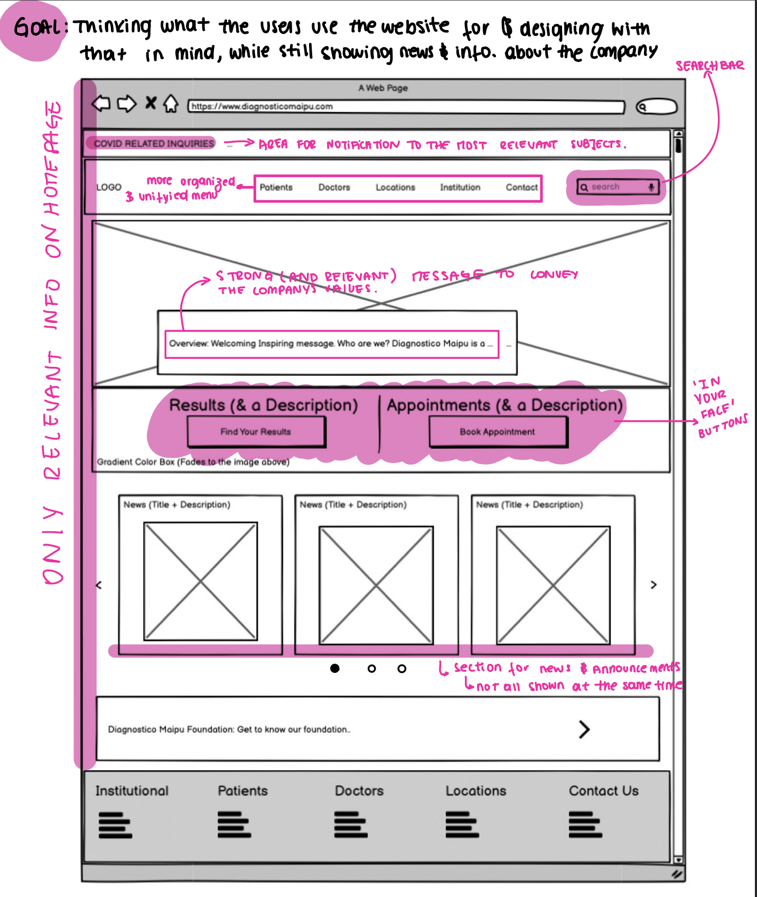
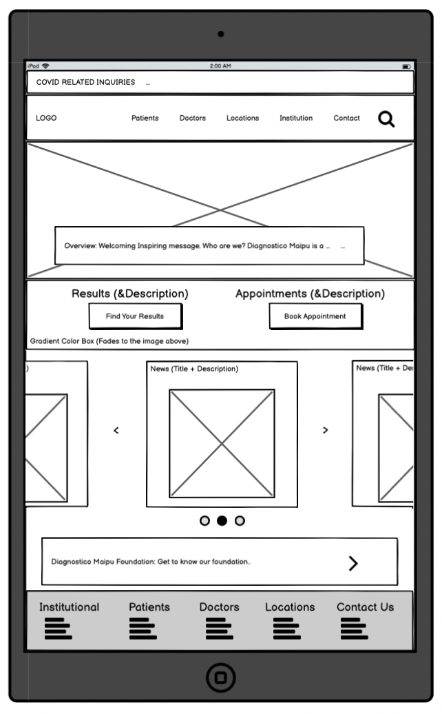
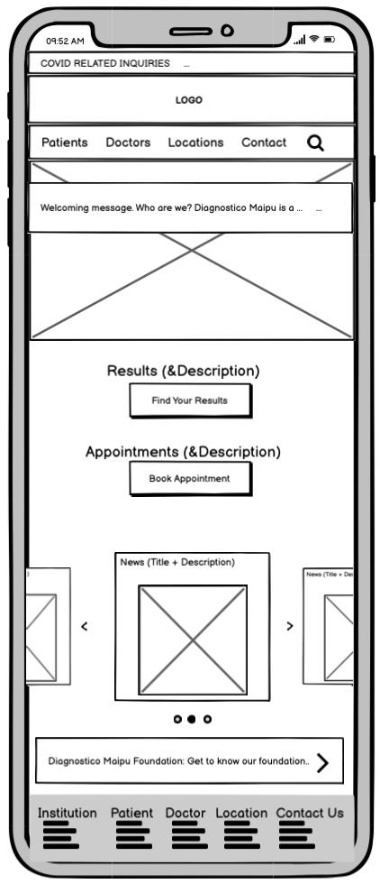
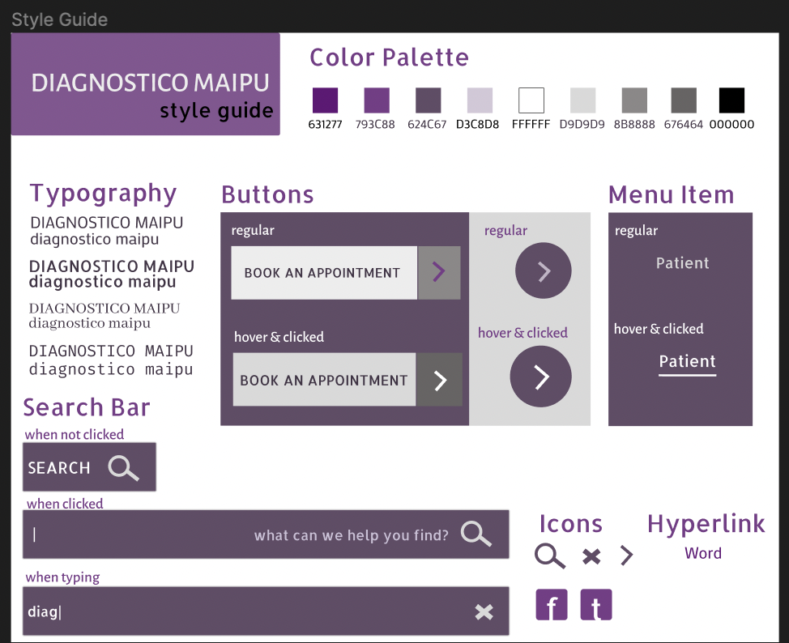
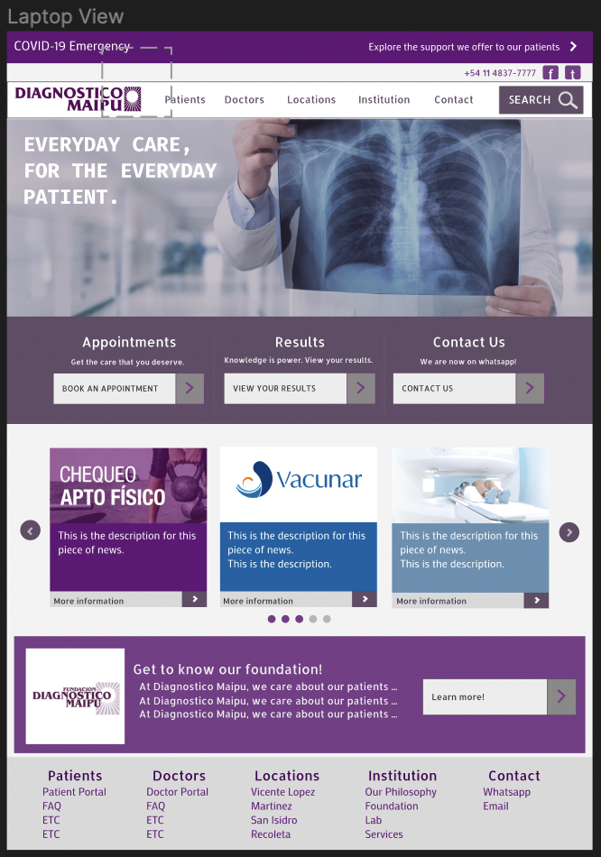
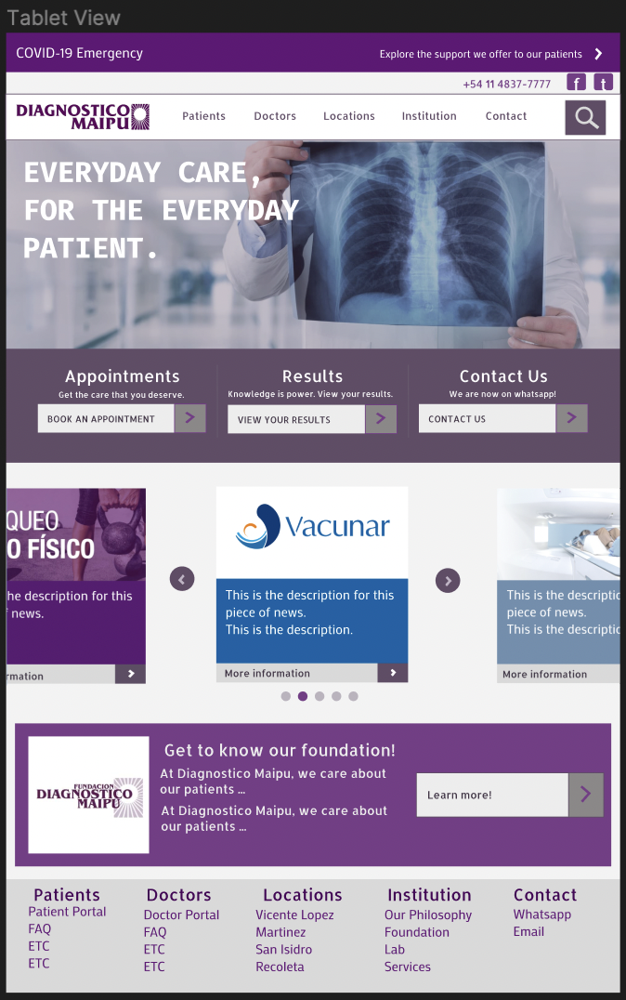
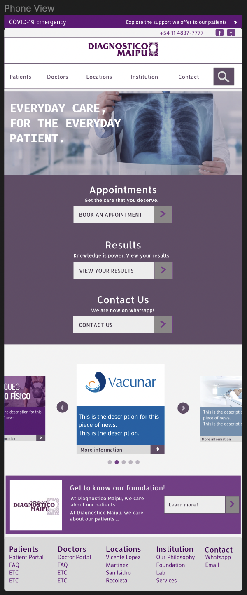

The low fidelity prototypes were made using Balsamiq. As responsiveness is an essential aspect of this assignment, there is one low-fi wireframe for each: computer, tablet and phone.

Proposal:
The main goal with this redesign is to declutter the homepage, to where is much easier to find what you are looking for when entering the website while still clearly conveying Diagnostico Maipu’s mission.
Different ways I am accomplishing is by:
The menu bar now has only one functionality that redirects the user to different pages specific to what they are looking for.
Search bar is now accessible at the top.
The “book an appointment” and “results” buttons are much more in the center, not blending out with their surroundings.
Ribbon at top with space for important announcements.
The first thing that appears when you open the page, and what is meant to catch the user’s attention is an image and a description of the company’s mission to provide the best service to patients, connecting them with the best doctors in the field.

Tablet view:
Keeping almost all of the elements of the computer view, main change is size of font (proportional to the change in size, a bit bigger in fact so that it is still legible).
The ‘news’ section now has an image carousel that displays one component at the time, instead of three.
Replaced search bubble with the search icon (will open a search bar).

Mobile view:
The logo and the menu bar are on two different rows.
The appointment and results button are now stacked.
Same carousel for the news section, the news that are not being displayed are smaller than the one that is.

The visual style guide has the goal of helping the designer
communicate their ideas to the developer. At the same time,
it was very helpful and efficient having a guide of the colors
and
fonts before starting the high fidelity prototype.
Responsive adaptations (Notes for developer):
Menu bar:
We want to keep all the options on the menu bar as well as the logo.
Uses flexbox as well (considering hamburger model where he logo is on its own row in mobile)
Search bar:
In laptop: ‘search’ word included
In tablet and phone: only the search icon to fit in the menu bar.
On the three views it expands when clicked to cover the whole menu bar.
Font size, Image size, Button size:
Change between the three screens, getting progressively smaller while still keeping the proportion.
Font in the buttons will get smaller, size of button will follow the same trend.
Changes with hover/click (user action):
Items on the menu bar will be underlined and changed to a darker color.
Buttons will change color and text size increases.
Search bar expands when clicked, as explained above.
Layout:
Buttons will use flexbox: will be in a row for computer and tablet, will compress to a column for the mobile view.
News section will use a carrousel tho display the blocks with information. The amount of blocks shown will change with the screen.


